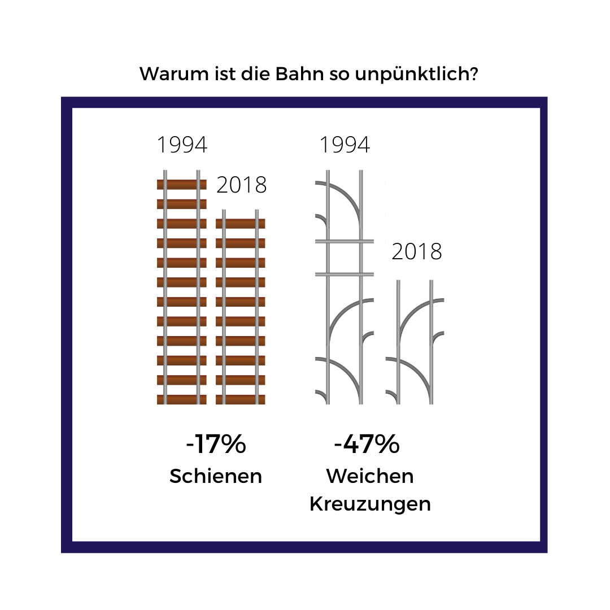
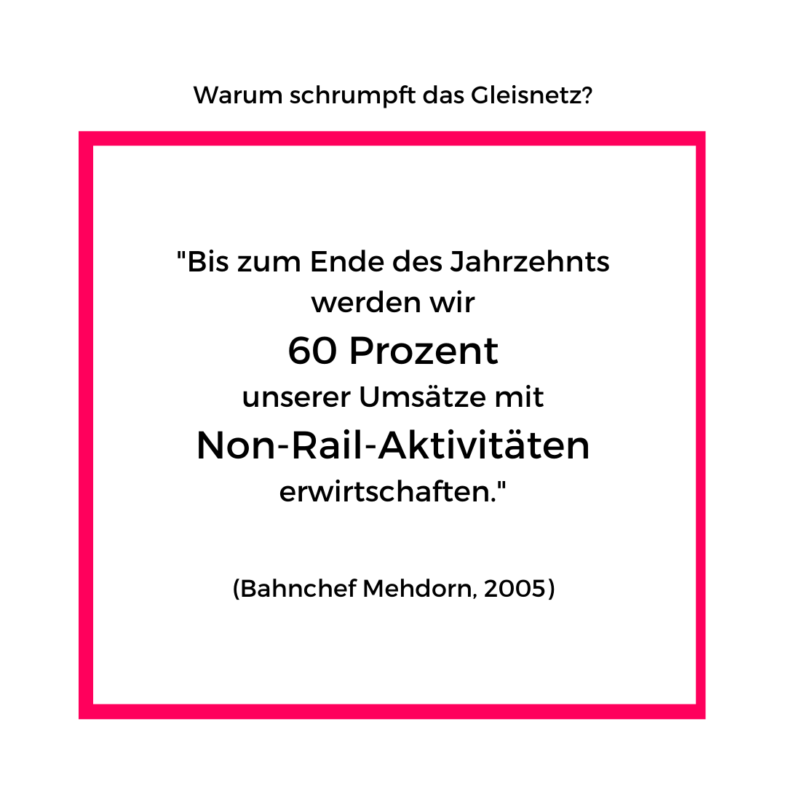

Viele in Deutschland würden die Bahn gerne lieben. Sie ist (im Prinzip) eines der umweltfreundlichsten Verkehrsmittel. Doch die Deutsche Bahn macht es uns sehr schwer.
Sie ist extrem unzuverlässig und das macht sie zu einer Gefahr für die Verkehrswende. Aber woran könnte das liegen?
Arno Luik ist einer der bekanntesten Kritiker der Deutschen Bahn. Er hat das schockierende Buch "Schaden in der Oberleitung" geschrieben, das zur Pflichtlektüre aller Leseratten gehört.
Der Klappentext sagt:
"Die Bahn ist eine echte Zumuting: Die Züge fahren immer unpünktlicher, oft fahren sie gar nicht und manchmal sind sie ein Risiko für unser Leben. Das Problem liegt im System:
Seit der Bahnreform im Jahr 1994, nach der die Bahn an die Börse gehen sollte, handeln die Bahn-Verantwortlichen, als wollten sie die Menschen zu Autofahrern erziehen."
Wenn das wirklich so ist, dann müssen, wir natürlich wissen, was abgeht!
Hier nochmal die Zahlen im Überblick, die belegen, dass die Deutsche Bahn trotz geschönter Statistiken das Schlusslicht in punkto Pünktlichkeit ist. (Quelle)
Sieht doch gar nicht soo schlimm aus? Die Pünktlichkeitsstatistiken sind nicht direkt mit anderen Ländern vergleichbar. Während in Deutschland ein Zug noch als pünktlich gilt, wenn er 5min 59s zu spät kommt, wäre er in der Schweiz schon nach 3min unpünktlich oder in Japan, China und Taiwan schon nach 1min.
Außerdem zählen ausgefallene Züge nicht in die Pünktlichkeitsstatistik. Im Gegenteil. Bahnchef Rüdiger Lutz hat 2019 gesagt: "Ein Zug, der nicht losfährt, kann nun mal nicht unpünktlich sein" (Buch, S. 183).
Wenn ein Zug trotzdem mal verspätet ist, lässt sich die Statistik auch mit anderen Mitteln aufhübschen. Dazu gehört die "Pofalla-Wende": Wenn ein Zug sich massiv verspäten könnte, dreht er einfach früher wieder um, ohne Rücksicht auf die Reisenden, die jetzt mit leerem Blick auf einen Zug warten, der nie kommt (Buch, S. 181).
Aber nun zurück zur Frage: Warum ist die Bahn eigentlich so unpünktlich, dass sie so verzweifelt tricksen muss?

Das hat damit zu tun, dass sich das Schienennetz seit der Bahnreform 1994 drastisch verkleinert hat, während das Straßennetz jedes Jahr um 10.000km anwächst (S.199). Die Zahl der Weichen und Kreuzungen hat sich sogar halbiert! Da ist es kein Wunder, dass die Züge beispielsweise dauernd warten müssen, bis sie überholt werden.
Noch schlimmer ist die Situation beim Güterverkehr. 1994 gab es fünfmal (!) so viele Gleisanschlüsse für Industriebetriebe wie 2018. Dagegen -- oder deswegen? -- nimmt der Gütertransport mit LKWs immer weiter zu. Das Verkehrsministerium will deshalb neue Straßen bauen.
Doch warum? Warum es sich beim Schrumpfen des Gleisnetzes nicht um eine Laune der Natur, sondern um ein geplantes Desaster handelt, erfahrt ihr jetzt.
(Quelle der Bildchen)

Dieses Zitat vom gefürchteten Bahnchef Mehdorn (der sich später auch um den BER gekümmert hat) gibt uns einen Hinweis, was bei der Bahn falsch laufen könnte.
Im Rahmen der Bahnreform von 1994 wurde die Bahn in ein Aktienunternehmen umgewandelt. Bis heute ist sie eines, auch wenn es zu 100% dem deutschen Staat gehört. Dabei war das Ziel von Anfang an, den Börsengang der Bahn vorzubereiten, das bedeutet: sie zu privatisieren. Und das Streben der Bahnmanager nach der Privatisierung hat sehr viel mit dem Verfall der Infrastruktur zu tun.
Heute ist die Deutsche Bahn ein Unternehmen, das in 140 Ländern agiert, und dort mit Bussen, Flugzeugen, Schiffen, Autos, Lastwagen und Krankenwagen unterwegs ist (S. 108). Womöglich interessiert sich die Bahn AG gar nicht mehr für den "deutschen Markt"? Wie es dazu kam, lässt sich besser mit dem folgenden Zitat von Mehdorn verstehen: "Wir haben einen weltweit offenen Markt, das muss man endlich verstehen und akzeptieren [...]! Wenn wir jetzt nicht in England, Spanien oder anderswo angreifen, dann werden wir hier in Deutschland zurückgedrängt." (S. 113)
Die Bahn hat die letzten Jahre viele der Grundstücke, die der früheren Bundesbahn oft vor Jahrzehnten geschenkt wurden, verramscht, oft mitsamt der Gleise. Erst 2019 bot die Bahn AG 576 665 Quadratkilometer Fläche zum Verkauf an. Für 780.000 Euro (S. 226). Inklusive Gleise. Und das ist kein Einzelfall. 2007 sagte der FDP-Verkehrsexperte Horst Friedrich: "Die Immobilien sind das Schmiermittel für den Aktienverkauf" (S. 224).
Der einstige Bahnchef Karl-Heinz Dürr schaffte schon 1997 die Postzüge ab, woraufhin sich die Post 6000 LKWs anschaffe musste (S. 200). Von Daimler. Dürr war davor Vorstandsmitglied bei Daimler.
Überhaupt: Fast alle Bahnchefs seit 1994 kamen aus der Auto- oder Luftfahrtindustrie (S. 102).

Diese alarmierende Information stammt von Seite 127.
Der Bundesrechnungshof hat die Bahn AG 2018 wie folgt gerügt: "Die EIsenbahnstruktur wurde jahrelang auf Verschleiß gefahren. Sie ist in einem schlechten Zustand, der Investitionsstau wächst. Wie die Tochtergesellschaften der DB AG die Milliardenzuschüsse des Bundes für den Erhalt der Bahninfrastruktur einsetzen, weiß das Bundesverkehrsministerium nicht. Ändern will es derzeit nichts."
Das Problem: Brücken, die im Schnitt 74,5 Jahre alt sind und kaum saniert werden, sind nicht nur teuer, wenn sie später neu gebaut werden müssen. Sie sind auch eine Gefahr für Leib und Leben. Oft müssen die Züge zur Sicherheit langsam über solche maroden Brücken fahren, was wiederum die Reisezeit unnötig verlängert.
Luik dokumentiert in seinem Buch noch endlos viele weitere Beispiele dafür, was an der Bahn marode ist. Im Grunde fast alles. Jedenfalls beträgt der Sanierungsstau der Bahn heute rund 57 Milliarden Euro (S. 196).
Aber warum macht die Bahn das? Das schadet ihr doch selbst, oder?
Warum also saniert die Bahn ihre Infrastruktur nicht? Der Grund sind auch gesetzliche Rahmenbedingungen aus der Zeit der Bahnreform.
Laut Bahngesetz gilt laut Luik: "Das Neue kostet die Bahn nichts, das zahlt der Steuerzahler. Das Alte aber zu pflegen, zu erhalten -- dafür ist die Bahn mit zuständig. Aber das würde ihre ohnehin schlechten Bilanzen noch mehr verhageln." (S. 218)
Der Bundesrechnungshof bestätigt dieses Problem.
Die bestehenden Gesetze sorgen also dafür, dass die Bahn ihre Infrastruktur, die über Jahrzehnte errichtet und instandgehalten wurde, zerfallen lässt.
Deshalb müssen wir etwas tun. Luik glaubt zwar, dass die Bahn auf unabsehbare Zeit nicht mehr so leistungsfähig wie früher werden kann. Trotzdem müssen wir verhindern, dass ihr Zustand noch schlechter wird.
Was braucht es dazu? Eine Reform der Bahn? Andere Manager*innen, die auch etwas von der Bahn verstehen? Von den Nachbarländern lernen? Darüber muss jetzt dringend diskutiert werden. Wir müssen Lehren aus dem Desaster der letzten dreißig Jahre ziehen. Die Bahn ist zu wichtig für unsere Zukunft, als sie ihrer Selbstzerstörung zu überlassen.